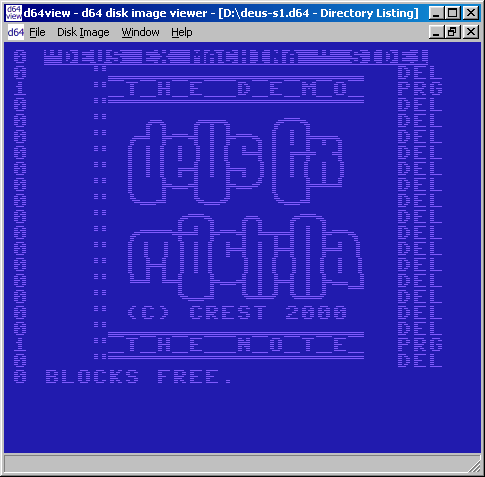

:: d64view :: |
:: welcome ::Welcome to the d64view home page! d64view shows d64 disk image contents, such as file directory, block availability map and error codes. It handles (for now) the d64 disk image format. :: download ::
d64view is Open Source; source code and a win32 binary is available here: d64view is done using wxWindows and should be portable to Linux. :: screenshot ::Here you can see how d64view looks: it shows crest's deus ex machina demo disk, side 1 |
|
mail: vividos@users.sourceforge.net |